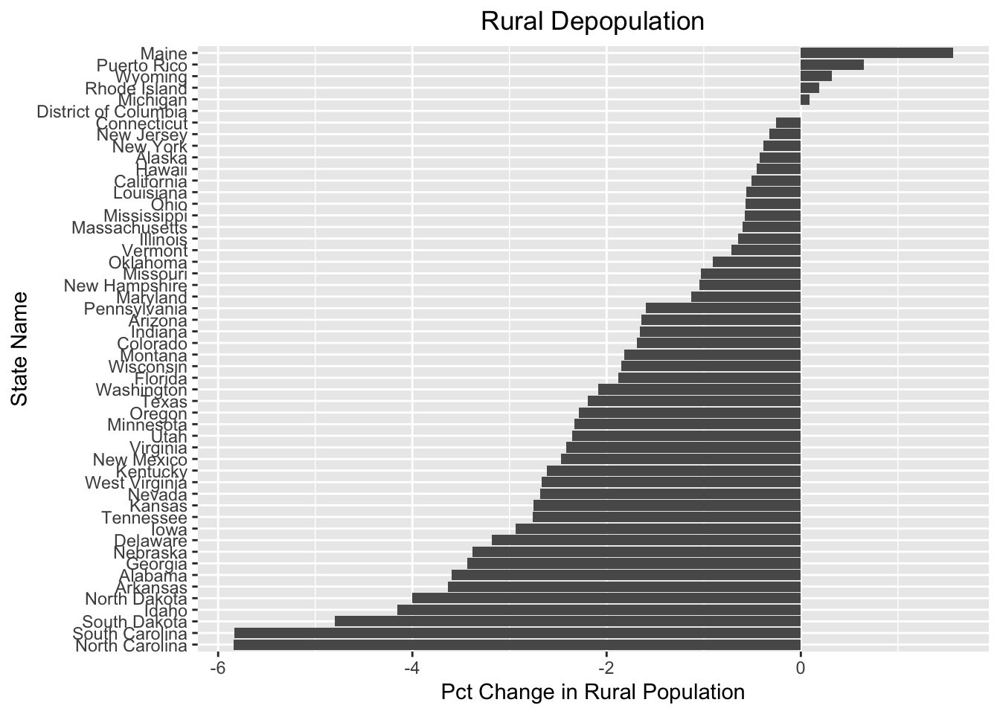
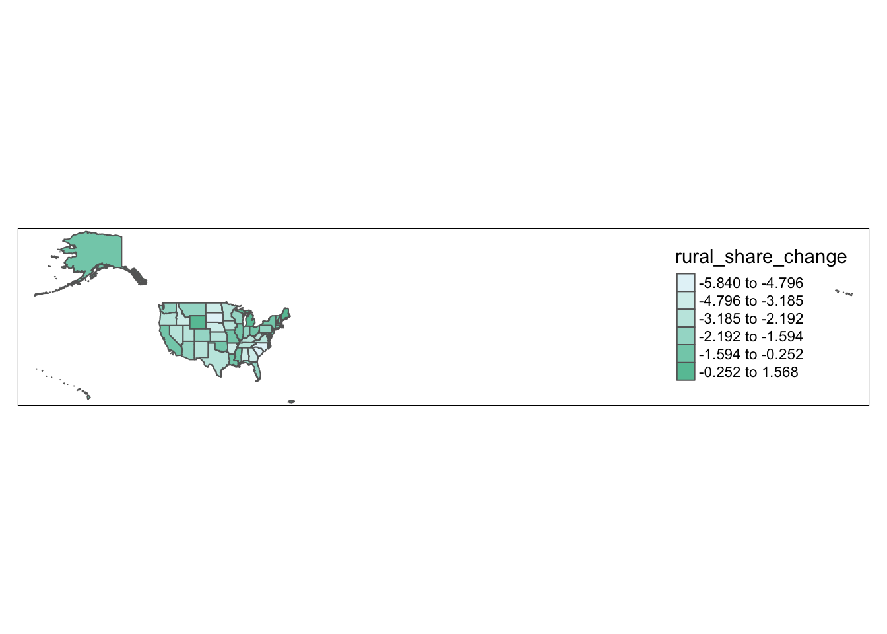
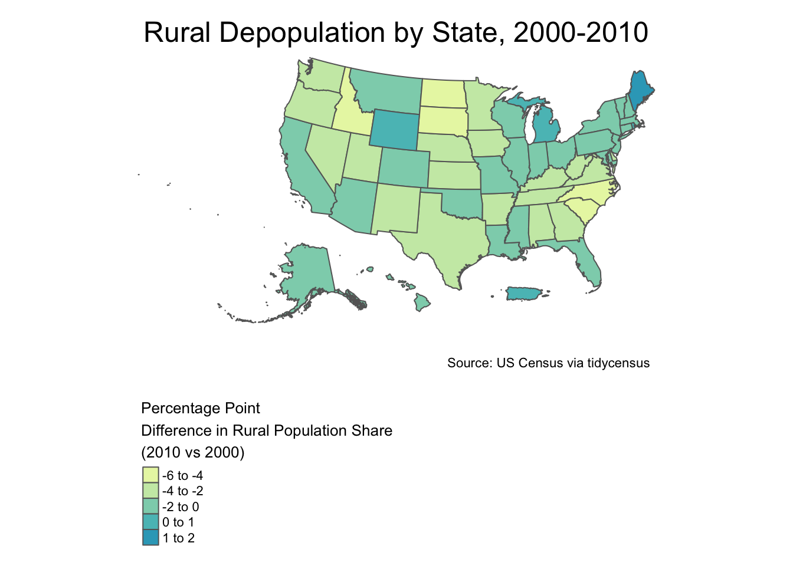

9 Working with multiple datasets
It is often useful to bring separate datasets together in order to carry out a given analytic task. For instance, one might want to compare change over time by bringing together census datasets from different years (though it’s worth noting that temporal analysis with census data can be tricky, and must be undertaken with caution, due to changes in calculation methods or geographic borders across different census years).
For example, let’s say we want to visualize the percentage point change in every state’s rural population share between 2000 and 2010. In other words, how did the percentage of each states rural population (with respect to its overall population) change across the first decade of the 2000s? Which states saw the greatest degree of rural depopulation, and which states saw the lowest degree of rural depopulation?
Let’s begin with the population_rural_2000_2010_list object that we created in the previous section. It’s a list that contains information on the percentage of each state’s population living in rural areas; the first list element contains information on states’ rural population share from the 2000 census, while the second contains analogous information from the 2010 census.
# Prints contents of "population_rural_2000_2010_list"
population_rural_2000_2010_list## $`2000`
## # A tibble: 52 x 6
## GEOID NAME P001001 P002005 rural_pct year
## <chr> <chr> <dbl> <dbl> <dbl> <dbl>
## 1 01 Alabama 4447100 1981427 44.6 2000
## 2 02 Alaska 626932 215675 34.4 2000
## 3 04 Arizona 5130632 607097 11.8 2000
## 4 05 Arkansas 2673400 1269221 47.5 2000
## 5 06 California 33871648 1881985 5.56 2000
## 6 08 Colorado 4301261 668076 15.5 2000
## 7 09 Connecticut 3405565 417506 12.3 2000
## 8 10 Delaware 783600 155842 19.9 2000
## 9 11 District of Columbia 572059 0 0 2000
## 10 12 Florida 15982378 1712358 10.7 2000
## # … with 42 more rows
##
## $`2010`
## # A tibble: 52 x 6
## GEOID NAME P001001 P002005 rural_pct year
## <chr> <chr> <dbl> <dbl> <dbl> <dbl>
## 1 01 Alabama 4779736 1957932 41.0 2010
## 2 02 Alaska 710231 241338 34.0 2010
## 3 04 Arizona 6392017 651358 10.2 2010
## 4 05 Arkansas 2915918 1278329 43.8 2010
## 5 06 California 37253956 1880350 5.05 2010
## 6 22 Louisiana 4533372 1215567 26.8 2010
## 7 21 Kentucky 4339367 1806024 41.6 2010
## 8 08 Colorado 5029196 696435 13.8 2010
## 9 09 Connecticut 3574097 429155 12.0 2010
## 10 10 Delaware 897934 149985 16.7 2010
## # … with 42 more rowsIn order to visualize the percentage point difference in state-level rural population shares between 2010 and 2000, we can join the two datasets in population_rural_2000_2010_list, compute the difference between “rural_pct” in the 2010 dataset and “rural_pct” in the 2000 dataset, and then use now-familiar visualization techniques to visualize this difference.
Before joining the two datasets, it might make sense to clean them up to avoid any confusion after we implement the join. First, it would be nice to rename the “rural_pct” variable in the two datasets to indicate the relevant year, i.e. in the form “rural_pct_YEAR” where YEAR takes on the value in the existing “year” column. After renaming the “rural_pct” variable in this way, we can go ahead and delete the “P001001”, “P002005”, and “year” columns, since they do not contain necessary information, and will simply clutter the final (joined) dataset.
9.1 Using functions and iteration to clean multiple datasets
To clean up the datasets in this way, let’s write a function that makes these changes, and use now-familiar iteration techniques to apply the changes to both of the list elements in population_rural_2000_2010_list.
# Write function to clean dataset according to the requirements specified above and assign to an object named "cleaning_function"
cleaning_function<-function(dataset){
year_vector<-dataset$year # extracts the "year" column as a vector
year_extracted<-year_vector[1] # plucks out the first element of "year_vector"
desired_name<-paste0("rural_pct", "_", year_extracted) # creates desired name string
names(dataset)[5]<-desired_name # renames "rural_pct" with "desired_name"
final<-dataset %>% select(-c(P001001, P002005, year)) # deletes specified columns
return(final) # returns cleaned dataset
}# applies "cleaning_function" to both of the list elements in ```population_rural_2000_2010_list``` and assigns the result to a new object named "population_rural_2000_2010_list_cleaned"
population_rural_2000_2010_list_cleaned<-map(population_rural_2000_2010_list, cleaning_function)# Prints contents of "population_rural_2000_2010_list_cleaned"
population_rural_2000_2010_list_cleaned## $`2000`
## # A tibble: 52 x 3
## GEOID NAME rural_pct_2000
## <chr> <chr> <dbl>
## 1 01 Alabama 44.6
## 2 02 Alaska 34.4
## 3 04 Arizona 11.8
## 4 05 Arkansas 47.5
## 5 06 California 5.56
## 6 08 Colorado 15.5
## 7 09 Connecticut 12.3
## 8 10 Delaware 19.9
## 9 11 District of Columbia 0
## 10 12 Florida 10.7
## # … with 42 more rows
##
## $`2010`
## # A tibble: 52 x 3
## GEOID NAME rural_pct_2010
## <chr> <chr> <dbl>
## 1 01 Alabama 41.0
## 2 02 Alaska 34.0
## 3 04 Arizona 10.2
## 4 05 Arkansas 43.8
## 5 06 California 5.05
## 6 22 Louisiana 26.8
## 7 21 Kentucky 41.6
## 8 08 Colorado 13.8
## 9 09 Connecticut 12.0
## 10 10 Delaware 16.7
## # … with 42 more rows9.2 Joining datasets
Now, let’s merge these datasets together, using “GEOID” as the join variable:
# Joins datasets in list and assigns joined dataset to object named "rural_change"
rural_change<-full_join(population_rural_2000_2010_list_cleaned[["2010"]], population_rural_2000_2010_list_cleaned[["2000"]], by="GEOID")# cleans "rural_change" by deleting "NAME.y" and renaming "NAME.x", and then creates new variable that captures the difference between "rural_pct_2010" and "rural_pct_2000"
rural_change<-rural_change %>%
select(-(NAME.y)) %>%
rename(NAME=NAME.x) %>%
mutate(rural_share_change=rural_pct_2010-rural_pct_2000)# prints modified "rural_change" object
rural_change## # A tibble: 52 x 5
## GEOID NAME rural_pct_2010 rural_pct_2000 rural_share_change
## <chr> <chr> <dbl> <dbl> <dbl>
## 1 01 Alabama 41.0 44.6 -3.59
## 2 02 Alaska 34.0 34.4 -0.421
## 3 04 Arizona 10.2 11.8 -1.64
## 4 05 Arkansas 43.8 47.5 -3.64
## 5 06 California 5.05 5.56 -0.509
## 6 22 Louisiana 26.8 27.4 -0.560
## 7 21 Kentucky 41.6 44.2 -2.62
## 8 08 Colorado 13.8 15.5 -1.68
## 9 09 Connecticut 12.0 12.3 -0.252
## 10 10 Delaware 16.7 19.9 -3.18
## # … with 42 more rowsWe can now use this joined dataset to visualize the extent of rural depopulation from 2000 to 2010, across the various states:
rural_change_graph<-rural_change %>%
ggplot(aes(x = reorder(NAME,rural_share_change), y=rural_share_change)) +
geom_col()+
coord_flip()+
labs(title="Rural Depopulation", x="State Name", y="Pct Change in Rural Population")+
theme(plot.title=element_text(hjust=0.5))
rural_change_graph 
To make a map:
state_population_2010_geo<-get_decennial(geography = "state",
variables = "P001001",
year = 2010,
geometry=TRUE)
state_population_2010_geo## Simple feature collection with 52 features and 4 fields
## geometry type: MULTIPOLYGON
## dimension: XY
## bbox: xmin: -179.1473 ymin: 17.88481 xmax: 179.7785 ymax: 71.35256
## geographic CRS: NAD83
## # A tibble: 52 x 5
## GEOID NAME variable value geometry
## <chr> <chr> <chr> <dbl> <MULTIPOLYGON [°]>
## 1 23 Maine P001001 1.33e6 (((-67.61976 44.51975, -67.61541 44.52197, -67.58774 44.5162, -67…
## 2 25 Massachuset… P001001 6.55e6 (((-70.83204 41.6065, -70.82373 41.59857, -70.82092 41.58767, -70…
## 3 26 Michigan P001001 9.88e6 (((-88.68443 48.11578, -88.67563 48.12044, -88.67639 48.12488, -8…
## 4 30 Montana P001001 9.89e5 (((-104.0577 44.99743, -104.2501 44.99822, -104.4701 44.99845, -1…
## 5 32 Nevada P001001 2.70e6 (((-114.0506 37.0004, -114.05 36.95777, -114.0506 36.84313, -114.…
## 6 34 New Jersey P001001 8.79e6 (((-75.52684 39.65571, -75.52634 39.65641, -75.52234 39.66081, -7…
## 7 36 New York P001001 1.94e7 (((-71.94356 41.28667, -71.9268 41.29012, -71.93526 41.28058, -71…
## 8 37 North Carol… P001001 9.54e6 (((-82.60288 36.03983, -82.60074 36.03742, -82.59878 36.03416, -8…
## 9 39 Ohio P001001 1.15e7 (((-82.81349 41.72347, -82.81049 41.72052, -82.80887 41.70833, -8…
## 10 42 Pennsylvania P001001 1.27e7 (((-75.41504 39.80179, -75.42804 39.80921, -75.45374 39.82031, -7…
## # … with 42 more rowsrural_change_geo<-full_join(state_population_2010_geo, rural_change, by="GEOID")
rural_change_geo## Simple feature collection with 52 features and 8 fields
## geometry type: MULTIPOLYGON
## dimension: XY
## bbox: xmin: -179.1473 ymin: 17.88481 xmax: 179.7785 ymax: 71.35256
## geographic CRS: NAD83
## # A tibble: 52 x 9
## GEOID NAME.x variable value geometry NAME.y rural_pct_2010 rural_pct_2000
## <chr> <chr> <chr> <dbl> <MULTIPOLYGON [°]> <chr> <dbl> <dbl>
## 1 23 Maine P001001 1.33e6 (((-67.61976 44.51975, -… Maine 61.3 59.8
## 2 25 Massa… P001001 6.55e6 (((-70.83204 41.6065, -7… Massa… 8.03 8.63
## 3 26 Michi… P001001 9.88e6 (((-88.68443 48.11578, -… Michi… 25.4 25.3
## 4 30 Monta… P001001 9.89e5 (((-104.0577 44.99743, -… Monta… 44.1 45.9
## 5 32 Nevada P001001 2.70e6 (((-114.0506 37.0004, -1… Nevada 5.80 8.49
## 6 34 New J… P001001 8.79e6 (((-75.52684 39.65571, -… New J… 5.32 5.65
## 7 36 New Y… P001001 1.94e7 (((-71.94356 41.28667, -… New Y… 12.1 12.5
## 8 37 North… P001001 9.54e6 (((-82.60288 36.03983, -… North… 33.9 39.8
## 9 39 Ohio P001001 1.15e7 (((-82.81349 41.72347, -… Ohio 22.1 22.6
## 10 42 Penns… P001001 1.27e7 (((-75.41504 39.80179, -… Penns… 21.3 22.9
## # … with 42 more rows, and 1 more variable: rural_share_change <dbl>preliminary_ruralchange_map<-tm_shape(rural_change_geo)+
tm_polygons(col="rural_share_change", n=6,style="jenks",palette="BuGn", midpoint=FALSE)
preliminary_ruralchange_map
state_population_2010_geo<-get_decennial(geography = "state",
variables = "P001001",
year = 2010,
geometry=TRUE) %>%
tigris::shift_geometry()## Getting data from the 2010 decennial Census## Downloading feature geometry from the Census website. To cache shapefiles for use in future sessions, set `options(tigris_use_cache = TRUE)`.## Using Census Summary File 1rural_change_geo<-full_join(state_population_2010_geo, rural_change, by="GEOID")final_ruralchange_map<-tm_shape(rural_change_geo)+
tm_polygons(col="rural_share_change",
breaks=c(-6,-4,-2, 0, 1, 2),
palette="YlGnBu",
midpoint=T,
title="Percentage Point\nDifference in Rural Population Share\n(2010 vs 2000)")+
tm_layout(frame=FALSE,
main.title="Rural Depopulation by State, 2000-2010",
main.title.position="center",
legend.outside=TRUE,
legend.title.size=1,
legend.outside.position = c("bottom"),
attr.outside=T)+
tm_credits("Source: US Census via tidycensus", position=c("right", "bottom"))
final_ruralchange_map